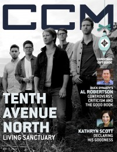

Tenth Avenue North
 May 2010 CCM Digital |
 15 November 2014 CCM Digital |
 15 October 2016 CCM Digital |
 15 December 2017 CCM Digital |
Media coverage:
- May 2010 in Group "Ideas: Ministry and Media: Tenth Avenue North", by Scott Firestone IV
- May 2010 in CCM Digital "The Light and Times of...", by Caroline Lusk
- Oct 2010 in CCM Digital "Gear Guide: When It Rains: Protecting Your Gear in the Elements", by Caroline Lusk
- Jan 2011 in CCM Digital "Musicians Corner: Story Behind the Song: You Are More"
- Jul 2011 in CCM Digital "Tour Spotlight: Moke Your Move Tour, Life Changers International Tour, Hoffman Estates, IL", by Andy Argyrakis
- Aug 2012 in CCM Digital "Fighting the Good Fight"
- 15 Mar 2014 in CCM Digital "Tour Spotlight: The Winter Jam 2014 Tour Spectular, Part Two", by Andy Argyrakis
- 15 Nov 2014 in CCM Digital "Living Sanctuary: The Community Within", by Andrew Greer
- 15 Oct 2016 in CCM Digital "Fearless Followers", by Andrew Greer
- 15 Dec 2017 in CCM Digital "Christmas Time Machine", by Kevin Sparkman
- Dec 2019 in Charisma "Charismata: Tenth Avenue North"
Albums & reviews:
2008: Over and Underneath
- May 2008 in Worship Leader
- Jul 2008 in Today's Christian Woman
- Aug 2008 in Charisma & Christian Life, by Leigh Devore
- Aug 2008 in Christian Single, by Andy Argyrakis
2010: The Light Meets The Dark
- May 2010 in Charisma
- May 2010 in CCM Digital, by Matt Conner
- Jun 2010 in Worship Leader, by Daryl Bean
- Jul 2010 in YouthWorker, by Matt Conner
- Oct 2010 in Living With Teenagers, by Randy Williams
2011: Live: Inside & In Between
- Apr 2011 in CCM Digital, by Andrew Greer
- Mar 2012 in Living With Teenagers, by Randy Williams
2012: The Struggle
- Aug 2012 in Charisma
- Aug 2012 in CCM Digital, by Andy Argyrakis
- Sep 2012 in Worship Leader, by Jason Whitehorn
2014: Islands
2017: Decade The Halls Vol. 1
2020: Unplugged For The People (The Acoustic Greatest Hits)
Award Summary (Nominations / Wins)
Dove Awards- Song: "By Your Side"
- Group of the Year
- Song: "Hold My Heart"
- Pop/Contemporary Album: The Light Meets The Dark
- Group of the Year
- Short Form Music Video: "You Are More"
- Recorded Music Packaging: The Struggle
- Song: "Control (Somehow You Want Me)"
- Recorded Music Packaging: Decade The Halls Vol. 1
© 2011 CMnexus. Last updated May 2025. Contact: editor -AT- cmnexus -DØT- org